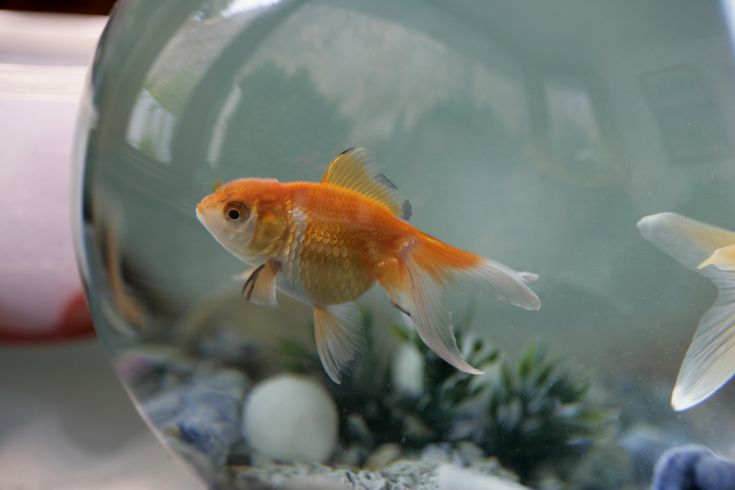
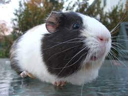
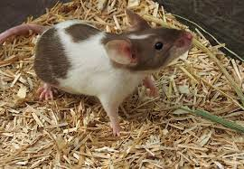
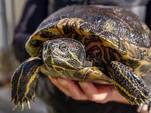

My Top 10 Favorite Pets
Dog

The dog, also known as the domestic dog, is a domesticated descendant of the wolf with an upturned tail. The dog is descended from an extinct ancient wolf, with the modern wolf being the dog's closest living relative.
Cat
The cat is a small carnivorous mammal that is domesticated. It is the only domesticated species in the Felidae family, and it is commonly referred to as the domestic cat to distinguish it from the family's wild members.
Bird

Feathers, toothless beaked jaws, the laying of hard-shelled eggs, a high metabolic rate, a four-chambered heart, and a strong yet lightweight skeleton distinguish birds from other warm-blooded vertebrates in the Aves class.
Fish
Fish are aquatic, craniate, gill-bearing animals that lack limbs with digits.
Hamster
Hamsters are rodents that belong to the Cricetinae subfamily, which includes 19 species divided into seven genera. They've established themselves as popular small pets. The golden or Syrian hamster is the most well-known hamster species, and it is also the most commonly kept as a pet.
Guinea Pig
Spaghetti is a cylindrical, long, thin, solid pasta. It's a common dish in traditional Italian cooking. Spaghetti, like other pasta, is made from milled wheat and water, and is sometimes supplemented with vitamins and minerals. Durum wheat semolina is used to make Italian spaghetti.
Mice
French fries, also known as chips, finger chips, french-fried potatoes, or simply fries, are deep-fried batonnet or allumette-cut potatoes that originate in either Belgium or France. They are made by cutting the potato into even strips, drying it, and then frying it in a deep fryer.
Rabbit
A flat cut of beef with parallel faces, usually cut perpendicular to the muscle fibers, is known as a beefsteak. The raw mass of a single serving in a typical restaurant service ranges from 120 to 600 grams. Grilled, pan-fried, or broiled beef steaks are common.
Turtle
A hamburger is a sandwich made up of fillings — usually a patty of ground meat, usually beef — that are sandwiched between two sliced buns or bread rolls.
Hedgehog
A corn dog is a sausage on a stick that has been deep fried after being coated in a thick layer of cornmeal batter. It is a dish that originated in the United States and is popular in American cuisine.